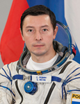

Lyndon B. Johnson Space Center
Houston, Texas 77058
|
National Aeronautics and Space Administration Lyndon B. Johnson Space Center Houston, Texas 77058 |
 |
Biographical Data |
||
REVIN SERGEI NIKOLAYEVICH
soyuz tma flight engineer
iss flight engineer
test cosmonaut
PERSONAL DATA:Born January 12, 1966 in Moscow, Russia. Married to Irina Alexandrovna Revina. They have one son, Yaroslav. Enjoys tourism, skiing and water skiing, balloon flights, photo- and videotaping.
EDUCATION:In 1989 he graduated from the Moscow Institute of Electronics Engineering and was qualified as an engineer-physicist. Presently he is a post-graduate student at the Moscow Humanitarian Institute.
PROFESSIONAL ACTIVITIES: After graduation he worked as an engineer for the NPO IT, a scientific production organization of measuring equipment, in Kaliningrad, Moscow region, from 1989 till 1993. From 30 August 1993 till April 1996 he worked as an engineer at the NPO-Energia named after S.P. Korolev.
In April 1996 by the order of the RSA Director General he was enlisted to the NPO-Energia cosmonaut corps as a test cosmonaut candidate.
From April 1996 to June 1998 he was taking basic space training course. On June 17, 1998 the Interdepartmental Qualification Board qualified him as a test cosmonaut.
From July 1998 to January 2011 he was a test cosmonaut of the Energia Rocket and Space Corporation named after S.P. Korolev.
Since January 2011 he is a test cosmonaut of the Gagarin Cosmonaut Training Center.
From October 1998 to April 2011 he took advanced training course, specializing on the ISS Program.
Since April 2011 he is training as the ISS 29/30 backup crewmember specializing as the Soyuz TMA flight engineer and the ISS flight engineer.
JANUARY 2012